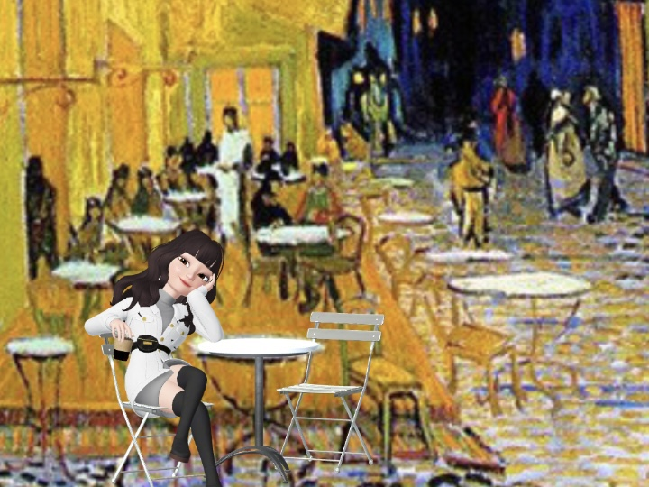
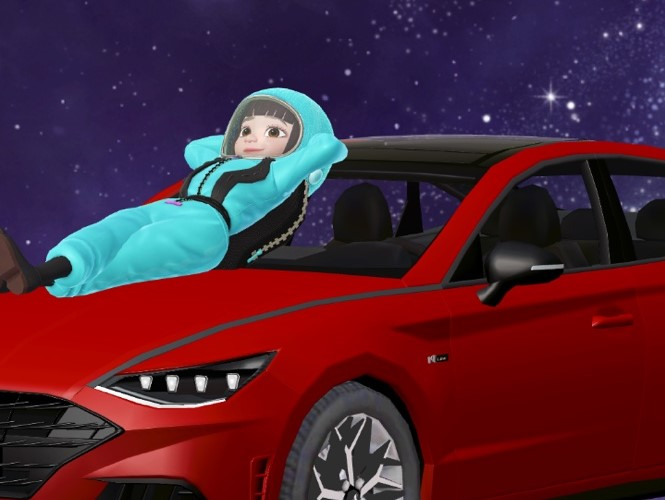

도시를 떠나는 사람들
복잡한 도시는 싫어.
한적하고 쾌적한, 영화관과 마트 등의 생활편의시설이 가까운, 살기 좋은 동네에서 살고 싶습니다.
예를 들면 순천...?

언택트 시대가 온다
미국 설계 회사인 에이컴(AECOM) 소속 건축가이자 혁신 담당 이사인 데일 싱클레어는 "회사에서 노트북 타자를 열심히 치는 시대는 지났다"며 "그건 집에서도 할 수 있는 일"이라고 말했다.

내일은 어떤 모습일까
똑같겠지 다를게 있나.

이 페이지는 BBC 비주얼저널리즘 팀에서 제작한
'재택근무의 일상화'... 코로나19가 바꿀 사무실의 미래
페이지를 비슷하게 구현해 본 개발 예제이다. 제작 방법에 대한 강의는 이 링크(유튜브)에서 확인할 수 있다.
문모눈을 소개한다.
2025년, 웹 개발자 문모눈은 주로 집과 카페에서 일한다.
코로나19로 인한 봉쇄조치 이후로, 전면 재택근무화 되어 회사에 갈 일은 거의 없다.
아침에 일어나면, 다노 언니의 스트레칭 영상으로 하루를 시작한다.
정원이 예쁜 나만의 아지트로 출근 아닌 출근을 한다.
사회적 거리두기를 위해 한적한 포토존에서 사진을 한 컷 찍는다.
나는 병아리가 좋앙
본격적으로 작업을 시작한다.
옅은 미소를 띄고 있지만 절대 딴짓 하는 거 아니다.
열일하는 중이다.
오랜 노동으로 인해 뻐근한 뒷목과 뻑뻑한 안구...
잠시 바람을 쐐러 핑크뮬리 정원에 왔다. 장기간의 싸움에서 승리하려면 이렇게 약간의 휴식과 발상전환이 필요하다.
나는 노래방 마니아다.
코로나19 이후로 노래방 금단현상이 일어날 정도였다. 오리지널 노래방의 분위기가 그립긴 하지만 그래도 메타버스 속 친구들이 같이 춤을 쳐줘서 노래할 맛이 난다.
여기는 고슴도치도 춤을 쳐춘다.
좋은 창작물의 원천은 좋은 영감이다.
그 영감은 내면의 깊은 '몽상'에서부터 온다고 믿는다.
(그래서인지 일하는 시간보다 멍때리는 비중이 더 큰 듯...)
난...ㄱr끔...멍을 때린ㄷr...
ㄱr끔은 몽상을 참을 수 없는 ㄴH가 별루ㄷr...
난...몽상ㅇI...좋ㄷr...ㅇㅏ니...
ㅁㅓ리가 ㅇㅏ닌...맘으로...ㅅ6ㅅ6하는 ㄴHㄱㅏ좋ㄷㅏ...
일과를 마치고 내일 할 일들을 점검한다.
위대한 개발자가 되어 유퀴즈 출연하는 모습을 상상하며
잠자리에 든다.
복잡한 도시는 싫어.
한적하고 쾌적한, 영화관과 마트 등의 생활편의시설이 가까운, 살기 좋은 동네에서 살고 싶습니다.
예를 들면 순천...?
미국 설계 회사인 에이컴(AECOM) 소속 건축가이자 혁신 담당 이사인 데일 싱클레어는 "회사에서 노트북 타자를 열심히 치는 시대는 지났다"며 "그건 집에서도 할 수 있는 일"이라고 말했다.
똑같겠지 다를게 있나.